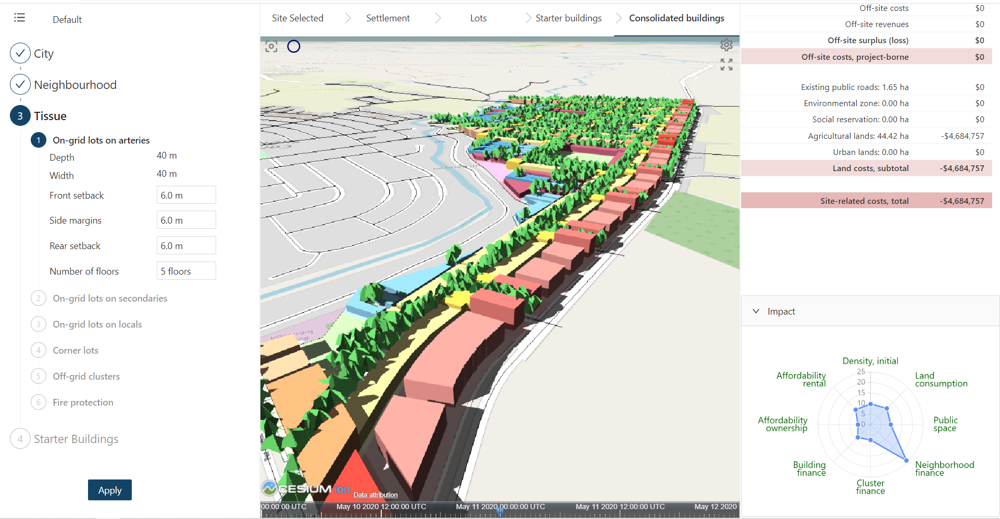

The Rapid Urbanism Explorer is an Augmented Intelligence (AI) Platform to strengthen collaboration amongst decision makers in developing new urban districts in advanced ways. Rapid iterative virtual prototyping empowers stakeholders to produce complex urbanization scenarios integrating spatial, temporal, socioeconomic and environmental parameters in real time. Further info on www.RapidUrbanism.com/Explorer-AI.
This is version 0.3 of RUE. This version is an early prototype of the software.

This software is offered under the Open Source MIT License.
For more information, please follow the links below: